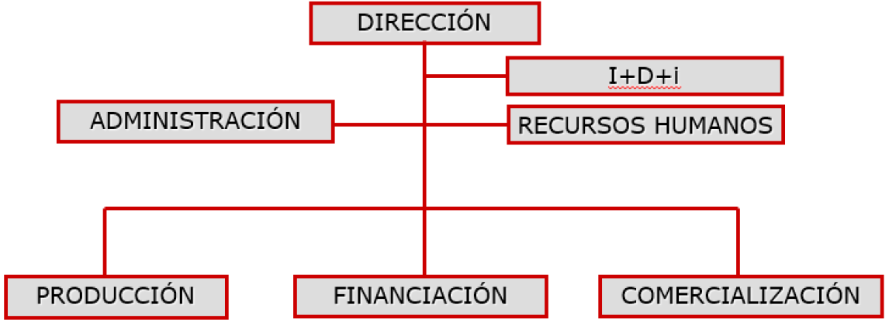
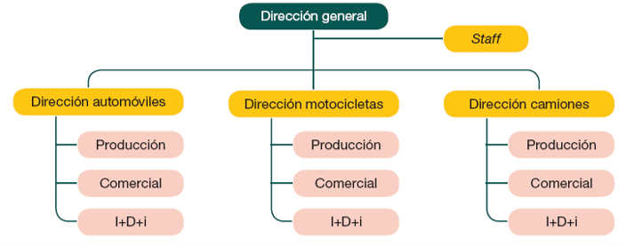
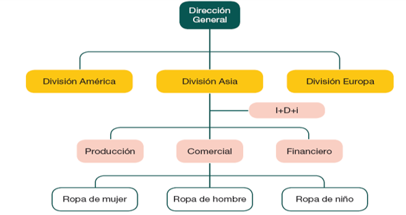
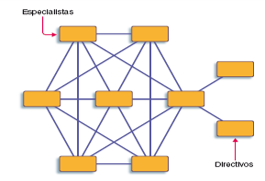
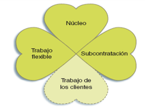
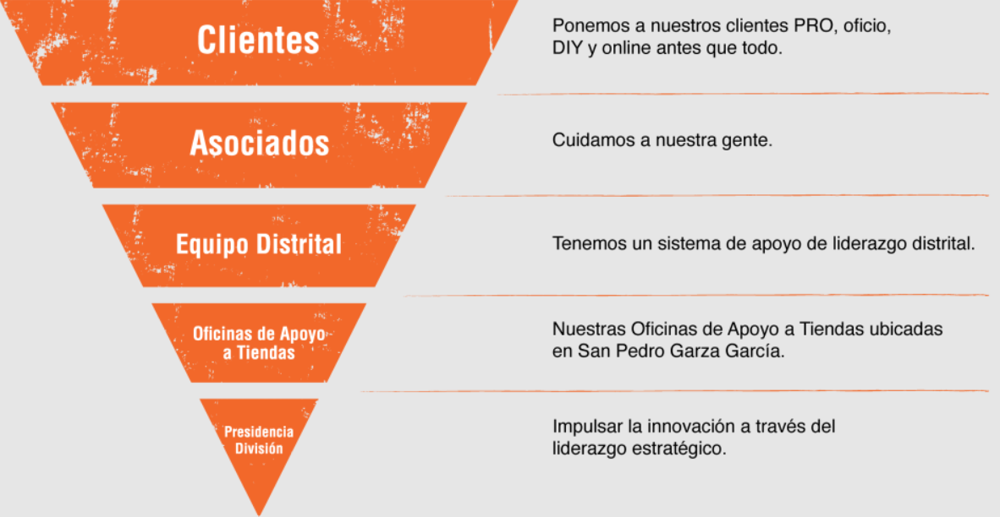
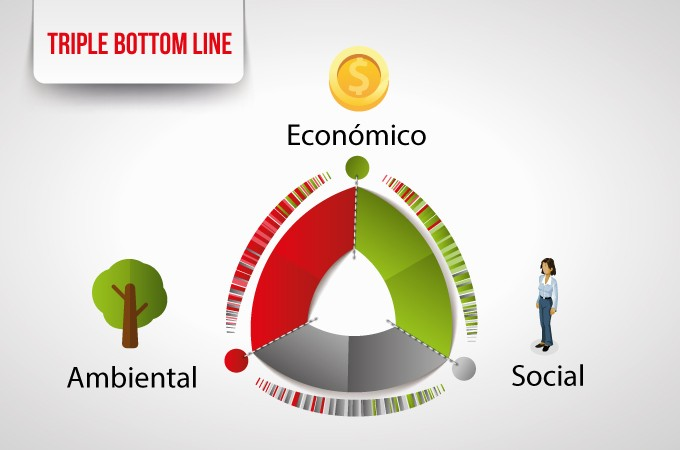
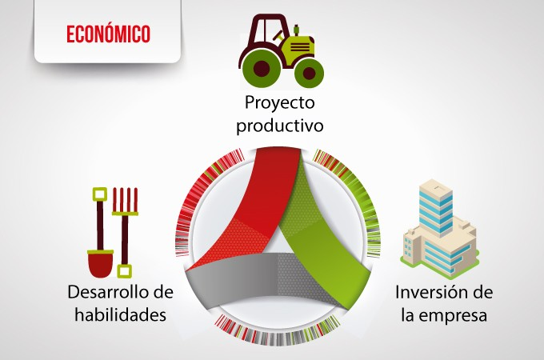
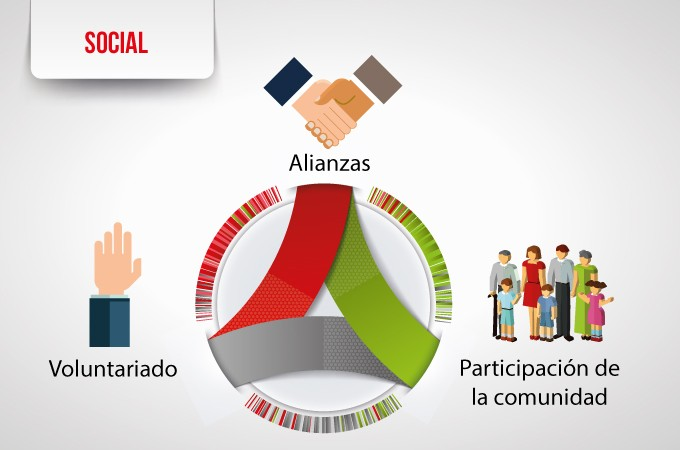
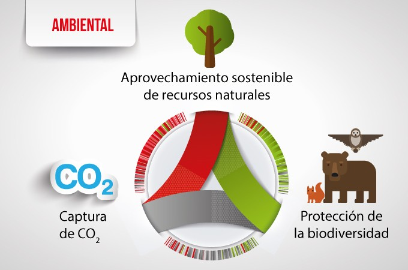

T1-La empresa
T1-La empresa (PDF)
Descarga el tema en formato PDF del tema 1. La empresa.
Descarga el tema en formato PDF del tema 1. La empresa.
Responde a estas preguntas de manera intuitiva. No afectan a tu calificación, solo nos ayudan a conocer tus conocimientos previos.
La empresa es una de las instituciones más importantes en cualquier sociedad moderna. No solo produce bienes y servicios que satisfacen necesidades, sino que también genera empleo, impulsa la innovación y contribuye al desarrollo económico y social.
En este primer tema analizaremos la naturaleza de la empresa como unidad económica y como sistema abierto, entendiendo sus elementos, funciones y relaciones con el entorno. Además, estudiaremos los modelos organizativos más relevantes, los principios generales de gestión empresarial y el papel de la empresa dentro de distintos sistemas económicos.
Por último, reflexionaremos sobre la importancia de la Responsabilidad Social Corporativa (RSC) y las diferentes formas jurídicas que puede adoptar una empresa, con especial atención a la realidad empresarial española, en la que predominan las PYMEs.
Este tema servirá de base para comprender los fundamentos de la gestión empresarial y para desarrollar una visión crítica sobre el papel que desempeñan las empresas en la sociedad actual.
Es una unidad económica de producción de bienes y servicios que desempeña la función de crear, producir y aumentar la utilidad de los bienes, de tal manera que sirvan para los fines de las personas, a través del empleo eficiente de ciertos recursos económicos de muy distinta naturaleza, bajo una única dirección y todo ello con la intención de conseguir unos objetivos claramente establecidos.
La empresa puede entenderse como un sistema abierto, ya que mantiene una relación constante de intercambio con su entorno:

Recursos procedentes del exterior como información, dinero, trabajo, tecnología, energía y bienes de equipo.
Combinación y utilización de esos recursos para producir bienes y servicios, generar valor y cumplir objetivos.
Productos y servicios para los clientes, pero también dividendos para los accionistas e impuestos para la sociedad.
Información procedente del mercado, clientes, competencia y entorno que permite ajustar los procesos de la empresa.
Lea el párrafo que aparece abajo y complete las palabras que faltan.
Describe cómo se organiza una entidad para conseguir sus objetivos. Para ello, se identifica la estructura funcional, es decir, las partes de la organización, y las dependencias entre sí.

◼ La propiedad corresponde a la persona o personas que aportan el dinero y/o los bienes necesarios para poner en marcha la empresa.
◼ La dirección de la empresa la ejercen las personas con autoridad para:
◼ Gobierno de la empresa: conjunto de mecanismos que buscan asegurar el comportamiento leal y honesto de los directivos a favor de los propietarios.
La administración de empresas, también conocida como dirección de empresas, administración comercial, administración de negocios o ingeniería comercial, es una disciplina que se enfoca en la planificación, organización, dirección y control de los recursos y actividades de una organización para alcanzar sus objetivos de manera eficiente y eficaz. Este campo abarca desde la gestión de pequeñas empresas hasta la dirección estratégica de grandes corporaciones, y su enfoque principal es maximizar el uso de recursos humanos, materiales, financieros y tecnológicos para garantizar la sostenibilidad y el crecimiento de las organizaciones. [1] Esta disciplina abarca la gestión de diversos recursos, incluyendo humanos, financieros, tecnológicos y materiales, con el propósito de maximizar la productividad y competitividad de la organización. Los administradores de empresas son responsables de la toma de decisiones estratégicas en áreas clave como: El objetivo principal de la administración de empresas es mejorar la relación entre productividad, calidad, costos, distribución y logística, así como optimizar los tiempos de producción y fomentar un ambiente laboral eficiente. Esto se logra mediante la implementación de estrategias que promuevan la mejora continua y la adaptación al entorno cambiante del mercado. Es fundamental que los administradores comprendan que las organizaciones están compuestas por personas cuyas percepciones, experiencias y motivaciones evolucionan con el tiempo. A diferencia de los sistemas mecánicos, donde las piezas desgastadas pueden ser reemplazadas según un programa de mantenimiento, en las organizaciones humanas es esencial considerar el desarrollo y bienestar del personal. Los cambios en el equipo, como la incorporación de nuevos miembros, pueden alterar la dinámica y las expectativas del grupo. Por lo tanto, una gestión efectiva de los recursos humanos es crucial para el éxito organizacional. En resumen, la administración de empresas es una disciplina integral que busca coordinar y optimizar todos los recursos de una organización para alcanzar sus metas y adaptarse a los desafíos del entorno empresarial actual. Los primeros procesos de administración surge como una consecuencia del crecimiento demográfico que llevó a la asociación de esfuerzos para lograr un fin determinado asignado labores a cada miembro del grupo familiar para trabajar como tribu en las actividades de caza, pesca y recolección. Teniendo un jefe de familia que ejercía la autoridad sobre el trabajo a ejercer dependiendo de los sexos y las edades de los individuos. [2] La caza, pesca y recolección pasaron a un lugar de importancia secundaría en la economía agrícola junto con el sedentarismo señalo el inicio de la civilización permitiendo el surgimiento de comunidades mucho más organizadas. Mesopotamia y Egipto, son los principales representantes de la época en que la clases sociales se organizaban llevando control del trabajo colectivo y del pago de tributos en especies. Los percusores de la administración moderna fueron los funcionarios encargados de aplicar las políticas tributarias del Estado y el manejo de humanos para obras arquitectónicas. [2] La administración de empresas ha evolucionado significativamente desde sus orígenes, adaptándose a los cambios sociales, económicos y tecnológicos a lo largo de la historia. Durante la Revolución Industrial en los siglos XVIII y XIX, surgieron nuevas formas de organización y prácticas administrativas debido al crecimiento de las grandes empresas y la necesidad de gestionar eficientemente los recursos en un entorno industrializado. En sus inicios, la administración se basaba en métodos organizativos heredados de civilizaciones antiguas, como los egipcios y los sumerios, quienes implementaron sistemas para gestionar recursos y actividades comerciales. Sin embargo, fue en el siglo XIX cuando se establecieron las primeras publicaciones científicas sobre administración, marcando el inicio de su desarrollo como disciplina académica. Una de las tendencias más influyentes en la gestión empresarial es la filosofía Kaizen, originaria de Japón. Kaizen, que significa "mejora continua", promueve la implementación de pequeñas mejoras constantes en los procesos de trabajo, involucrando a todos los niveles de la organización. Esta filosofía enfatiza la importancia de la participación activa de todos los empleados en la identificación y solución de problemas, fomentando una cultura de mejora continua y eficiencia. El método Kaizen se basa en un enfoque sistemático que incluye: Este enfoque ha sido adoptado globalmente, demostrando su eficacia en la mejora de procesos y la competitividad empresarial. En resumen, la administración de empresas ha transitado desde prácticas rudimentarias en civilizaciones antiguas hasta convertirse en una disciplina científica y estratégica. La incorporación de filosofías como Kaizen ha sido fundamental para fomentar una cultura de mejora continua, adaptándose a los desafíos y oportunidades del entorno empresarial moderno. - Describir el proceso con el nivel de detalle necesario. - Incluir las medidas adecuadas. - Detectar áreas potenciales de mejora. - Elegir las mejoras más prometedoras. - Medir los resultados para comprobar que los cambios son positivos. - Realizar las medidas. - Analizar los resultados. - Tomar acciones para mejorar los resultados. La gestión empresarial abarca un conjunto de técnicas que se aplican a la administración de una empresa, y del tamaño de la empresa dependerá la dificultad de la gestión del empresario o productor. El objetivo fundamental de la gestión del empresario es mejorar la productividad, sostenibilidad y competitividad, asegurando la viabilidad de la empresa en el largo plazo. Los cambios tecnológicos que se han producido en la sociedad han ampliado el campo de la gestión. En las primeras etapas del desarrollo económico, las empresas se caracterizaban por realizar tareas repetitivas, fáciles de definir. En el taller o en la oficina, el personal sabía exactamente cuál era y seguiría siendo su misión. La labor del director gerente era supervisar la marcha de los trabajos en curso en un proceso reiterativo. El resultado se medía según lo que se producía, y se funcionaba bajo una fuerte disciplina y control riguroso. Había que satisfacer las expectativas de los propietarios de ganar dinero y esa era la mayor motivación. Esta simple interpretación de la gestión que existía entonces sigue aún en pie, como un eco del pasado. Algunos empresarios siguen comportándose como si nada hubiese cambiado. Pero son los zarpazos de la realidad los que han hecho que los empresarios tengan en cuenta muchos otros factores, porque los mercados ya no crecen en función de la oferta, y hay que luchar en mercados muy competitivos y a veces poco recesivos interiormente, sin contar con los problemas de competencia de las empresas foráneas. La automatización, la informática, las nuevas tecnologías de la información y las crecientes expectativas de la sociedad han puesto al descubierto muchas carencias de los directivos españoles. La naturaleza de la gestión se ha hecho más compleja para actuar en función de una serie de prioridades, como es la de conseguir beneficios constantes, por encima de todas ellas. El gerente tiene una responsabilidad especial con sus subordinados, pero si aplica esta responsabilidad únicamente en términos de control y supervisión, no estará cumpliendo con ella. Tiene que establecer un sistema de interrelación. El personal deberá conocer con claridad qué se espera de ellos. El personal deberá participar directamente en la fijación de sus objetivos de trabajo. Esto propiciará la claridad y eficacia de la tarea que hay que desarrollar y hará que el subordinado se sienta más comprometido y dispuesto a colaborar. El personal deberá sentirse apoyado con los recursos físicos y humanos necesarios para lograr sus objetivos. El personal aportará y podrá desarrollar sus propios recursos personales para actuar con mayor eficacia. Por su parte, la empresa le ayudará a conseguirlo mediante el asesoramiento y los consejos permanentes e, incluso, con una formación adicional. El personal deberá recibir información coherente o comentarios críticos sobre su actuación. Si bien habrá que criticar a veces su actuación, esto le servirá de incentivo y no de amenaza coercitiva que pueda lesionar su autoestima. Conseguir estos objetivos en las relaciones personales y el respaldo sin límites de la dirección supone mayor recompensa que los meros incentivos económicos. Para que una gestión determinada sea óptima y por ende, dé buenos resultados no solamente deberá hacer mejor las cosas, sino que deberá mejorar aquellas cuestiones que influyen directamente en el éxito y eso será asequible mediante la reunión de expertos que ayuden a identificar problemas, arrojen soluciones y propongan nuevas estrategias, entre otras cuestiones. La gestión de este tipo deberá considerar una serie de factores, entre ellos financieros, productivos y logísticos, por citar los más importantes. Los profesionales, individuos que se dedican a la gestión empresarial, deben sí o sí dominar todos estos condicionantes para poder triunfar en el tema y que la empresa que dirigen sea exitosa. Debido a la relevancia de la que, hoy en día, dispone esta actividad dentro de las empresas, han proliferado las carreras que justo forman a profesionales en este asunto específico. Normalmente son las facultades de ciencias económicas y empresariales las que dictan este tipo de formación profesional. Ahora bien, no todos los factores que intervienen en la gestión empresarial se aprenden en el marco universitario formal; acompañando a la educación debe estar presente la experiencia que se ostente en el campo, y esta última es fundamental. Los conocimientos teóricos son importantísimos, pero la gestión empresarial, asimismo, atañe a otros tantos aspectos que están asociados a la planificación y a la toma de decisiones que están más bien vinculados a la práctica que se tenga en este campo, y ni hablar de la influencia de la personalidad que se demanda por parte de quienes tienen a cargo esta tarea, ya que se requieren una serie de condiciones de mando y de creatividad para poder llevarla a cabo de manera eficiente. Existen cuatro funciones fundamentales que la administración de la empresa deberá cumplir para lograr una gestión eficiente que produzca buenos resultados: La carrera de Ciencias Empresariales se refiere al tipo de estudios universitarios enfocados en a la gestión de empresas. Los profesionales graduados en este tipo de carreras se preparan para todas aquellas funciones y procesos derivados de la gestión empresarial, incluyendo de este modo actividades de comercialización, administración, producción, financiación, etc. Las titulaciones en Ciencias Empresariales pueden ser superiores (4 o más años), o de ciclo corto, es decir, de tres años conducentes a la formación de profesionales en las mismas actividades que antes se asignaban a los Titulados en Estudios Mercantiles o en la carrera de Comercio. Tienen como contenidos básicos asignaturas como el Derecho de Sociedades, Dirección Comercial, Dirección Financiera, Economía (micro y macro), Economía Política, Contabilidad de Costos, Contabilidad Financiera, Contabilidad Aplicada, Sistema Tributario, Matemática Financiera, Informática Aplicada a la Gestión de la Empresa, Matemática y Estadística Aplicada a la Empresa, Organización y Administración de Empresas.Administración de empresas
 Véase también: Economía de la empresa
Véase también: Economía de la empresa
Historia
[editar]
Antecedentes
[editar]
Época primitiva
[editar]
Periodo agrícola
[editar]
Revolución industrial
[editar]
Etapas planteadas por Ishikawa para la implementación del mejoramiento continuo
[editar]
Identificación, definición del proceso real
- Detectar lo que desean y necesitan los clientes.
Medición y análisis del proceso
- Estudiar los resultados de las medidas.
Identificación de oportunidades de mejora
- Diseñar y aplicar los cambios para la mejora.
Estabilización del proceso
Plan para la revisión y mejora continua
- Diseñar medidas de seguimiento dentro del proceso.
Clasificación de la gestión empresarial según sus diferentes técnicas
[editar]
Técnicas de gestión empresarial
[editar]
Campo que abarca la gestión
[editar]
Cualidades y conocimientos de un buen gestor
[editar]
Actividad de índole empresarial que se propone mejorar la competitividad y la productividad de una compañía
[editar]
Preparación formal y experiencia
[editar]
Funciones
[editar]
En los estudios universitarios
[editar]
Administración de negocios internacionales
[editar]
El término negocios internacionales alude a todas las transacciones comerciales (privadas y gubernamentales; ventas, inversiones, logística y transporte) que se llevan a cabo entre dos o más personas, regiones, ciudades y/o naciones dentro de los límites políticos. Usualmente las compañías privadas emprenden dichas transacciones redituables; el gobierno las emprende por lucro o por política.[3] Se refiere a todos los negocios con actividades que involucren transacciones entre fronteras para bienes, servicios entre dos o más naciones, transacciones por recursos económicos,incluido el capital, las habilidades, las personas, etcétera, para producción internacional de bienes físicos y servicios, así como para finanzas, bancos, aseguranzas, construcción y otros.[4] Una empresa multinacional es una empresa que tiene un enfoque a nivel mundial en los mercados y la producción con una operación o más de un país. A menudo se llama corporación multinacional o empresa transnacional. Las multinacionales más conocidas se encuentran empresas de comida rápida como McDonald's y Yum! Brands (dueños de Taco Bell, KFC y Pizza Hut),[5] los fabricantes de vehículos como General Motors, Ford Motor Company y Toyota, compañías de electrónica de consumo como Samsung, LG y Sony, y las empresas de energía, tales como ExxonMobil, Shell y BP. La mayor parte de las corporaciones más grandes operan en varios mercados nacionales e internacionales. La administración de negocios internacionales se centra en las disciplinas empresariales clave dentro de un contexto internacional, ya sean los fundamentos de finanzas, el marketing, las cadenas de suministro, los recursos humanos y las operaciones. Para ello, se aplican técnicas, conceptos y procesos administrativos basados en el entorno global actual y en algunas necesidades emergentes. El administrador de negocios internacionales debe tener nociones sobre finanzas, política y aspectos legales ligados a las empresas multinacionales.[6] Estas tendencias están transformando la forma en que las organizaciones operan y compiten en el mercado global.
Esta sección es un extracto de Negocios internacionales.[editar]
Véase también
[editar]
Referencias
[editar]
En la era digital, la administración de empresas ha evolucionado para adaptarse a nuevos desafíos y oportunidades. Algunas de las tendencias más relevantes incluyen: 1. Digitalización y automatización: Las empresas están adoptando tecnologías como la inteligencia artificial, el big data y la robótica para optimizar procesos y mejorar la toma de decisiones. 2. Gestión remota: El teletrabajo y los equipos distribuidos han ganado relevancia, especialmente después de la pandemia de COVID-19, lo que ha llevado a las empresas a implementar herramientas de colaboración en línea. 3. Sostenibilidad: La responsabilidad social corporativa y la gestión ambiental se han convertido en pilares estratégicos para las organizaciones que buscan un impacto positivo en la sociedad y el medio ambiente. 4. Agilidad organizacional: Las metodologías ágiles, como Scrum y Kanban, se están aplicando no solo en proyectos tecnológicos, sino también en la gestión general de empresas. Artículo: "Digital Transformation in Business" publicado en Harvard Business Review. Informe: "Tendencias globales en gestión empresarial" por McKinsey & Company.
Control de autoridades
 Datos: Q2043282
Datos: Q2043282 Multimedia: Business administration / Q2043282
Multimedia: Business administration / Q2043282 Libros y manuales: Administración de empresas
Libros y manuales: Administración de empresas
 Datos: Q2043282
Datos: Q2043282 Multimedia: Business administration / Q2043282
Multimedia: Business administration / Q2043282 Libros y manuales: Administración de empresas
Libros y manuales: Administración de empresas
Tendencias modernas en la administración de empresas
[editar]
Fuentes sugeridas: Libro: "Administración moderna" por Stephen P. Robbins.
Se fundamenta en Áreas o divisiones semiautónomas y una Administración central.
Criterios para realizar las divisiones → clientes, productos, mercados...

Aparece cuando confluyen productos, mercados y clientes muy diferentes entre sí, que han de gestionarse por separado.

Surge por la subcontratación de la mayoría de las actividades, tanto productivas como comerciales y de I+D+i.


Desde sus inicios, los fundadores de The Home Depot, Bernie Marcus y Arthur Blank, promovieron una estructura organizativa poco convencional: la pirámide invertida. En este modelo:

En vez de una jerarquía tradicional donde el poder fluye de arriba hacia abajo, en The Home Depot el poder y la prioridad están orientados hacia quienes están más cerca del cliente Cairnway CoachingSHRMTrig.
El Store Support Center (centro de apoyo corporativo) incluso evita llamarse "sede mundial" para subrayar que su función es respaldar a las tiendas y no operar por encima de ellas Cairnway Coaching.
Una cita emblemática de los fundadores expresa esta filosofía:
"Si un empleado de tienda necesita ayuda, desde el presidente hasta el conserje deben detener lo que están haciendo y atender la llamada".
Este modelo refuerza una cultura centrada en el cliente y en los empleados, donde se destaca la excelencia en el servicio, el empoderamiento del personal y un enfoque colaborativo.
Relaciona cada tarjeta con su pareja.
Relaciona cada tarjeta con su pareja.
","showMinimize":false,"itinerary":{"showClue":false,"clueGame":"","percentageClue":40,"showCodeAccess":false,"codeAccess":"","messageCodeAccess":""},"cardsGame":[{"url":"","x":0,"y":0,"author":"","alt":"","audio":"","color":"#000000","backcolor":"#ffffff","eText":"Organizaci%C3%B3n%20divisional","urlBk":"/previews/C__Users_Alberto.LopezHernand_OneDrive_-_Universidad_de_Castilla-La_Mancha_Documentos_FGE_ExeLearning_-_FGE_25-26_res_T1.2-OrgDivisional.png","xBk":0,"yBk":0,"authorBk":"","altBk":"","audioBk":"","colorBk":"#000000","backcolorBk":"#ffffff","eTextBk":""},{"url":"","x":0,"y":0,"author":"","alt":"","audio":"","color":"#000000","backcolor":"#ffffff","eText":"Organizaci%C3%B3n%20mixta","urlBk":"/previews/C__Users_Alberto.LopezHernand_OneDrive_-_Universidad_de_Castilla-La_Mancha_Documentos_FGE_ExeLearning_-_FGE_25-26_res_T1.2-OrgMixta.png","xBk":0,"yBk":0,"authorBk":"","altBk":"","audioBk":"","colorBk":"#000000","backcolorBk":"#ffffff","eTextBk":""},{"url":"","x":0,"y":0,"author":"","alt":"","audio":"","color":"#000000","backcolor":"#ffffff","eText":"Pir%C3%A1mide%20invertida","urlBk":"/previews/C__Users_Alberto.LopezHernand_OneDrive_-_Universidad_de_Castilla-La_Mancha_Documentos_FGE_ExeLearning_-_FGE_25-26_res_T1.2-PiramideInvertida.png","xBk":0,"yBk":0,"authorBk":"","altBk":"","audioBk":"","colorBk":"#000000","backcolorBk":"#ffffff","eTextBk":""},{"url":"","x":0,"y":0,"author":"","alt":"","audio":"","color":"#000000","backcolor":"#ffffff","eText":"Tr%C3%A9bol","urlBk":"/previews/C__Users_Alberto.LopezHernand_OneDrive_-_Universidad_de_Castilla-La_Mancha_Documentos_FGE_ExeLearning_-_FGE_25-26_res_T1.2-Trebol.png","xBk":0,"yBk":0,"authorBk":"","altBk":"","audioBk":"","colorBk":"#000000","backcolorBk":"#ffffff","eTextBk":""},{"url":"","x":0,"y":0,"author":"","alt":"","audio":"","color":"#000000","backcolor":"#ffffff","eText":"Virtual%20o%20en%20red","urlBk":"/previews/C__Users_Alberto.LopezHernand_OneDrive_-_Universidad_de_Castilla-La_Mancha_Documentos_FGE_ExeLearning_-_FGE_25-26_res_T1.2-VirtualEnRed.png","xBk":0,"yBk":0,"authorBk":"","altBk":"","audioBk":"","colorBk":"#000000","backcolorBk":"#ffffff","eTextBk":""}],"isScorm":0,"textButtonScorm":"Guardar la puntuación","repeatActivity":false,"textAfter":"","version":1.3,"percentajeCards":100,"type":0,"showSolution":true,"timeShowSolution":3,"time":3,"evaluation":false,"evaluationID":"","id":"202581613719-120","msgs":{"msgSubmit":"Enviar","msgClue":"¡Genial! La pista es:","msgCodeAccess":"Código de acceso","msgPlayStart":"Pulse aquí para jugar","msgScore":"Puntuación","msgErrors":"Errores","msgHits":"Aciertos","msgMinimize":"Minimizar","msgMaximize":"Maximizar","msgFullScreen":"Pantalla Completa","msgExitFullScreen":"Salir del modo pantalla completa","msgNoImage":"Pregunta sin imágenes","msgEndGameScore":"Antes de guardar la puntuación comience la partida.","msgScoreScorm":"La puntuación no se puede guardar porque esta página no forma parte de un paquete SCORM.","msgOnlySaveScore":"¡Sólo puede guardar la puntuación una vez!","msgOnlySave":"Sólo puede guardar una vez","msgInformation":"Información","msgYouScore":"Su puntuación","msgAuthor":"Autoría","msgOnlySaveAuto":"Su puntuación se guardará después de cada pregunta. Sólo puede jugar una vez.","msgSaveAuto":"Su puntuación se guardará automáticamente después de cada pregunta.","msgSeveralScore":"Puede guardar la puntuación tantas veces como quiera","msgYouLastScore":"La última puntuación guardada es","msgActityComply":"Ya ha realizado esta actividad.","msgPlaySeveralTimes":"Puede realizar esta actividad cuantas veces quiera","msgClose":"Cerrar","msgAudio":"Audio","msgNumQuestions":"Número de tarjetas","msgTryAgain":"Necesita al menos un %s% de respuestas correctas para conseguir la información. Vuelva a intentarlo.","msgEndGameM":"Has completado el juego. Tu puntuación es %s.","msgUncompletedActivity":"Actividad no completada","msgSuccessfulActivity":"Actividad superada. Puntuación: %s","msgUnsuccessfulActivity":"Actividad no superada. Puntuación: %s","msgTypeGame":"Relaciona","msgCheck":"Comprobar","msgRestart":"Reiniciar"}}Relación entre resultados y capital.
\[ \text{Productividad} = \frac{\text{Cantidad producida}}{\text{Recursos empleados}} \]
Es la relación entre producción e inputs. Expresa el grado de eficiencia técnica.
\[ ROE = \frac{\text{Resultados}}{\text{Fondos propios}} \] \[ ROS = \frac{\text{Resultados}}{\text{Facturación}} \] \[ ROA = \frac{\text{Resultados}}{\text{Total activos}} \]
Expresa el grado de eficiencia económica.
\[ \text{Racionalidad económica} = \frac{\text{Resultados obtenidos}}{\text{Medios empleados}} \]
La Responsabilidad Social Corporativa (RSC) es un modelo de gestión que propone que las empresas no solo se enfoquen en obtener beneficios económicos, sino que también asuman un compromiso con su entorno. Esto significa tener en cuenta cómo sus decisiones y actividades afectan a la sociedad y al medio ambiente.
Una empresa socialmente responsable es aquella que se preocupa por generar un impacto positivo en tres dimensiones clave:
De este modo, la RSC no es una acción puntual o de marketing, sino una forma de gestionar la empresa con responsabilidad, ética y compromiso.
La RSC sirve como transición para mostrar que a partir de aquí se abordarán las distintas dimensiones de la responsabilidad empresarial. Es importante destacar al alumnado que la RSC no es un añadido opcional, sino que forma parte de la estrategia y la cultura empresarial moderna.

Un comportamiento empresarial responsable, desde el punto de vista económico, significa crear valor. Esto implica que la empresa debe ser rentable, pero no a cualquier precio.

La dimensión económica de la RSC busca demostrar que una empresa puede ser rentable sin descuidar a las personas ni al medio ambiente.
Desde el punto de vista social, un comportamiento responsable implica respeto e implicación con las personas y comunidades que forman parte del entorno de la empresa.

En definitiva, la dimensión social de la RSC coloca a las personas en el centro de la gestión empresarial.
Finalmente, la dimensión medioambiental de la RSC destaca la obligación de las empresas de adaptar su planificación estratégica para minimizar su impacto ecológico.

El mensaje clave es que la sostenibilidad no es un coste, sino una inversión estratégica que asegura la continuidad de la empresa y contribuye al bienestar del planeta.
Obra publicada con Licencia Creative Commons Reconocimiento Compartir igual 4.0
{kind=link}
{kind=link}
{kind=link}
{kind=link}
{kind=link}